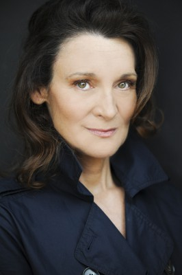

#2527 Das Ultimative Geschenk
Alternativ: The Ultimate Gift

 IMDB-Wertung: 7.4 / 10
IMDB-Wertung: 7.4 / 10  Metascore: 49
Metascore: 49 
Er ist reich, er ist erfolgreich, und die Frauen stehen Schlange: Jason Stevens muss sich keine Sorgen um seine Zukunft machen, denn Enkel des milliardenschweren Industriellen Red Stevens zu sein, ist wirklich kein hartes Los. Als sein Großvater stirbt, erwartet er außer einem riesigen Erbe nicht viel, denn beide hatten seit dem Tod von Jasons Vater kein gutes Verhältnis mehr. Bei der Testamentseröffnung erleben er und seine ganze Familie jedoch eine böse Überraschung. Während seine Verwandten mit dem Pflichtteil abgespeist werden, muss Jason zwölf Aufgaben erfüllen, um sein Erbe antreten zu können. Nur widerwillig nimmt er die Herausforderung an, doch das Vermächtnis seines Großvaters wird zum Abenteuer und Geschenk seines Lebens ...
Jahr: 2006
Dauer: 114 Minuten
FSK: 6
Land: USA Studio: Bigger Picture, TheTonspuren: DTS - ,
Untertitel: Deutsch,
Auflösung: 1080p (1920x1080) Größe: 9891 MB
Genre: Drama, Familie, Liebe
Regisseur: Michael O. Sajbel
Drehbuch: Cheryl McKay, Jim Stovall
Soundtrack: Mark McKenzie
Darsteller:
 James Garner als Howard 'Red' Stevens
James Garner als Howard 'Red' Stevens Bill Cobbs als Mr. Theophilus Hamilton
Bill Cobbs als Mr. Theophilus Hamilton Lee Meriwether als Miss Hastings
Lee Meriwether als Miss Hastings Brett Rice als Bill Stevens
Brett Rice als Bill Stevens- D. David Morin als Jack Stevens
 Abigail Breslin als Emily Rose
Abigail Breslin als Emily Rose Ali Hillis als Alexia
Ali Hillis als Alexia- Drew Fuller als Jason Stevens
 Mircea Monroe als Caitlin
Mircea Monroe als Caitlin- Donna Cherry als Sarah Stevens
-  Catherine McGoohan als Ruth Stevens
 Mark Joy als Bill's Lawyer
Mark Joy als Bill's Lawyer Mel Fair als Jack's Lawyer
Mel Fair als Jack's Lawyer- Roger W. Durrett als Ruth's Lawyer
- David Temple als Ruth's Husband
 Brian Dennehy als Gus
Brian Dennehy als Gus- Michael Rosander als Farm Worker
- Tim Parati als Tow Truck Driver
- Dean Kaneshiro als Waiter
 Mike Pniewski als Operative
Mike Pniewski als Operative- Elisha T. Minter als Nurse
 Brian F. Durkin als Sarah's Boyfriend
Brian F. Durkin als Sarah's Boyfriend Rose Bianco als Bella
Rose Bianco als Bella- Jim Stovall als Limo Driver
- Rick Eldridge als Banker #2
- Noël Baker als Mayor's Daughter , uncredited
- Cindy Barringer als Thanksgiving Waitstaff , uncredited
- Mellie Boozer als Party Guest , uncredited
- Lee Darnell als Funeral Mourner , uncredited
- Wendy L. Foster als Bus Passenger , uncredited
- Jamie Hall als Associate , uncredited
- Robert Harris als Texan in Airport Scene , uncredited
- Ted Johnson als Banker , uncredited
- Jeff Joslin als First Class Passenger , uncredited
- Parker Mack als Patient , uncredited
- Tina Murphy als Hampton Receptionist , uncredited
- Angela Oberer als Attorney , uncredited
- Brendan Sibley als Girl #2 in Park , uncredited
- Christina Sibley als Girl in Park , uncredited
- Marty Siu als Airplane Mother with Baby , uncredited
- Justin St. Gelais als Cancer Patient , uncredited
- Steven St. Gelais als Cancer Patient , uncredited
- George Lee als Pastor
- Alecia Brady Curcuru als Bill's Wife
- Francis Isaac als Bill's Daughter
- Daniel Barbeau als Teenager Stevens
- Kenneth A. Free Jr. als Associate #1
- Tonya Shuffler als Associate #2
- Eric Gilliland als Flight Attendant
- Tammy Fontaine als Restaurant Manager
Datei: X:\3-Trilogie(N-Z)\Ultimativ - Gift of a Legacy\Ultimative Geschenk, Das (2006, FSK6, 1920x1080).mkv seit 19.11.2015
Festplatte: HD Collection-3(N-Z)-6(A-Z)
 Alle Filme aus Gruppe '3-Trilogie(N-Z)\Ultimativ - Gift of a Legacy'
Alle Filme aus Gruppe '3-Trilogie(N-Z)\Ultimativ - Gift of a Legacy'